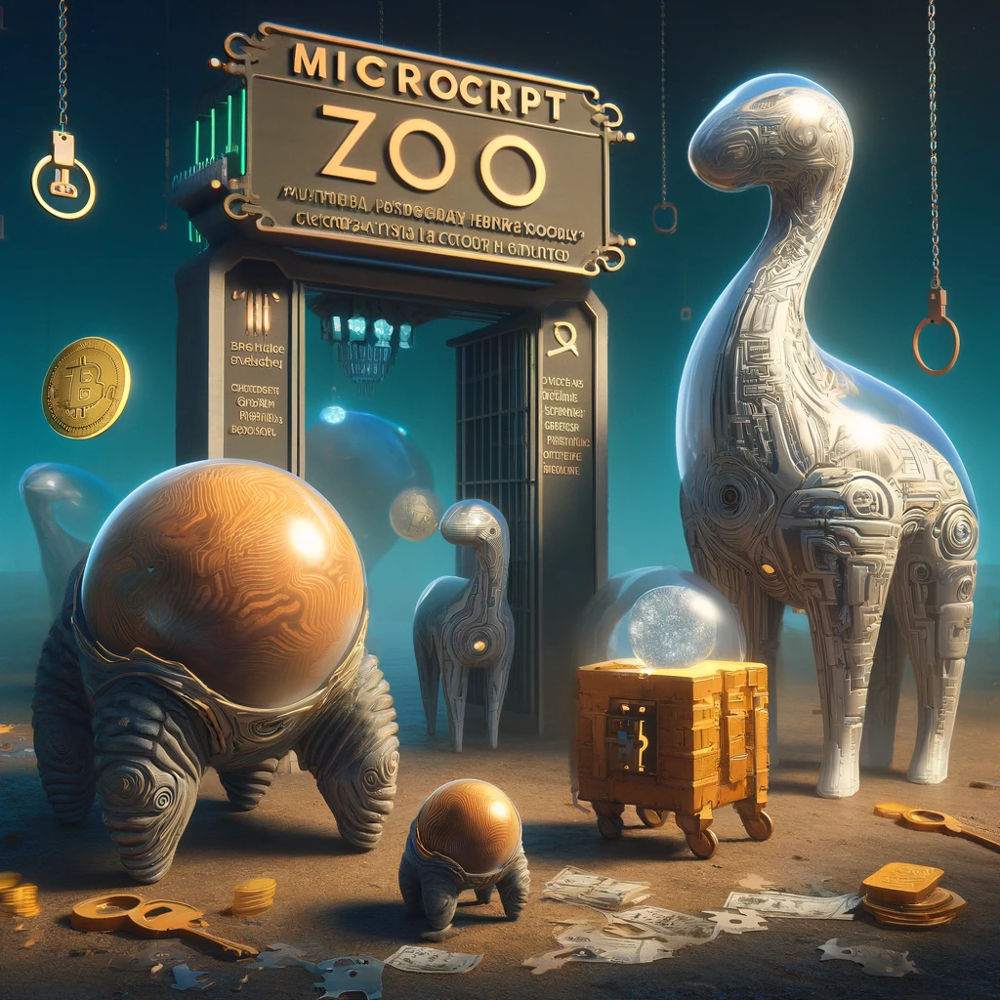
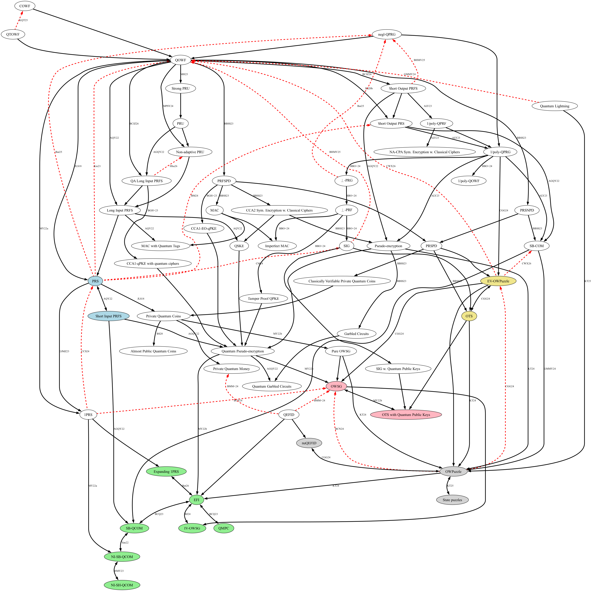

The graph on this website describes known connections between quantum cryptographic primitives. We only show MicroCrypt: primitives that are based on assumptions which are potentially weaker than one-way functions. A black arrow from A to B means that there is a (not necessarily black-box) construction of B from A. A red dashed arrow from B to A means that there is no black-box construction of A from B. Nodes which share a color are equivalent.
Hover over a node or an edge to preview it, and click (or tap) it to select it: it stays highlighted, and its details and links to the papers appear in the bar below the graph. Clicking a selected edge again opens its paper. Click an empty spot to clear the selection. Scroll or drag to pan, pinch or Ctrl+scroll to zoom.
The zookeeper is Or Sattath. Contributions are welcome! See https://github.com/sattath/microcrypt-zoo for details.
